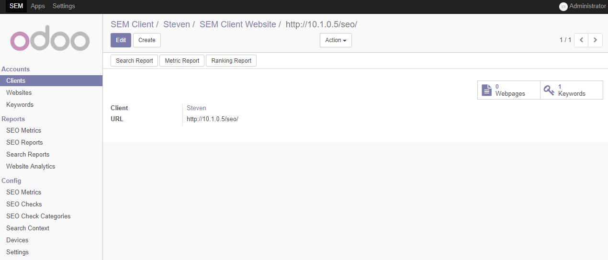
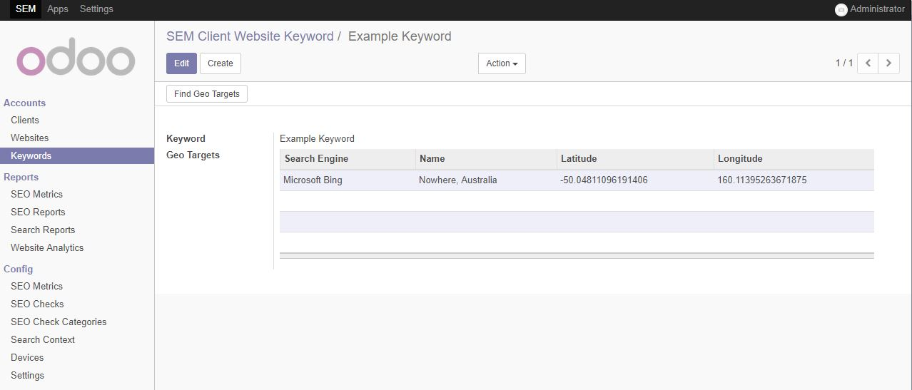
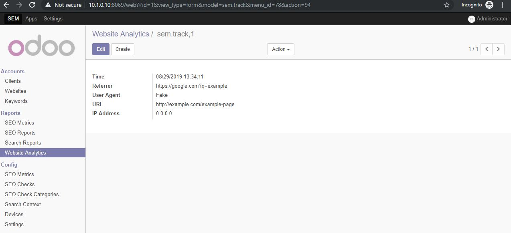
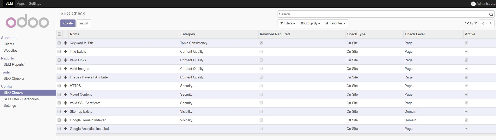

Description
Set of tools to help with Search Engine Marketing / Optimisation
Client Details
Keep track of clients websites, target keywords

Search Context
See insight and search results relative to a search context such as from a specific geographic location or device type

Primative Tracking
Log individual website hits to gain low level information about user activity on clients website

Modular SEO checks
Perform automated tests on a webpage to detect potential issues such as broken links
Each check can be turned on and off to help control some of the more resouce intense checks

SEO Reports
Reports return details about each check such as which links are broken or which images are missing alt tags

*NOTE* Due to the nature of the module and it's interaction with search engines multiple dependencies are needed for full functionality, here is a breakdown
Google CSE: is needed for the "Google Domain Indexed" SEO check
Google Ads: used in getting search insight information such as the number of times a keyword is searched in a particular geo location
Bing Web Search v7: returns geo specific search results for each keyword
Bing Maps: used for finding latitude and longitude when creating search context
Selenium: Controls web browsers and is used for the "Page Load Time" and "Non Optimised Images" SEO checks
Google Chrome Headless: only browser the module currently supports needed alongside Selenium
Selenium Chrome driver: driver needed to programmatically control Google Chrome
If a dependency is not setup it will just skip the SEO check
Selenium and Google Chrome Installation (Ubuntu 64 bit)
https://selenium-python.readthedocs.io/installation.html
https://tecadmin.net/setup-selenium-chromedriver-on-ubuntu/
sudo pip3 install selenium
sudo su -
curl -sS -o - https://dl-ssl.google.com/linux/linux_signing_key.pub | apt-key add
echo "deb [arch=amd64] http://dl.google.com/linux/chrome/deb/ stable main" >> /etc/apt/sources.list.d/google-chrome.list
apt-get -y update
apt-get -y install google-chrome-stable
wget https://chromedriver.storage.googleapis.com/2.41/chromedriver_linux64.zip
apt install unzip
unzip chromedriver_linux64.zip
mv chromedriver /usr/bin/chromedriver
chown root:root /usr/bin/chromedriver
chmod +x /usr/bin/chromedriver
Then restart your Odoo instance